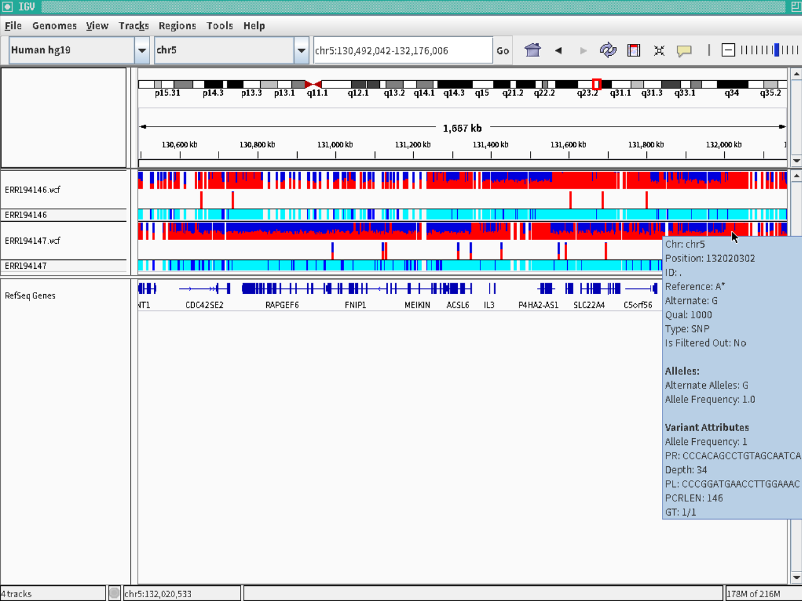

- An example of genome view by IGV. Click to large.
- Indels can be detect exactly, as well as SNPs.
- Nucleotide sequences of primer pair to amplify target mutations are also shown.
| 
|
|
$ sudo apt update $ sudo apt install curl $ sudo apt install git $ sudo apt install sra-toolkit $ git clone https://github.com/akiomiyao/ped.git
$ cd ped $ git pull $ perl download.pl accession=ERR194146 $ perl download.pl accession=ERR194147Scripts are updated by git pull command.
$ perl ped.pl target=ERR194146,ref=hg19 $ perl ped.pl target=ERR194147,ref=hg19Since hg19 reference file is already configured, data are automatically downloaded and calculated.
 Click to large.
Click to large.